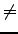

| My T-shirt suits me |
Our friend Victor participates as
an instructor in an environmental volunteer program. His boss asked Victor to distribute
N T-shirts to M volunteers, one T-shirt each volunteer, where N is multiple of
six, and N M. There are the same number of T-shirts of each
one of the six available sizes: XXL, XL, L, M , S, and XS. Victor has a little
problem because only two sizes of the T-shirts suit each volunteer.
M. There are the same number of T-shirts of each
one of the six available sizes: XXL, XL, L, M , S, and XS. Victor has a little
problem because only two sizes of the T-shirts suit each volunteer.
You must write a program to decide if Victor can distribute T-shirts in such a way that all volunteers get a T-shirt that suit them. If N  M, there can be some remaining T-shirts.
The first line of the input
contains the number of test cases. For each test case, there is a line with two numbers N and M. N is
multiple of 6,
1 N
N 36, and indicates the number of T-shirts. Number M,
1
36, and indicates the number of T-shirts. Number M,
1 M
M 30, indicates the number of volunteers, with N
30, indicates the number of volunteers, with N M. Subsequently, M lines are listed where each line contains, separated by
one space, the two sizes that suit each volunteer (XXL, XL, L, M , S, or XS).
M. Subsequently, M lines are listed where each line contains, separated by
one space, the two sizes that suit each volunteer (XXL, XL, L, M , S, or XS).
For each test case you are to print a line containing YES if there is, at least, one distribution where T-shirts suit all volunteers, or NO, in other case.
3 18 6 L XL XL L XXL XL S XS M S M L 6 4 S XL L S L XL L XL 6 1 L M
YES NO YES